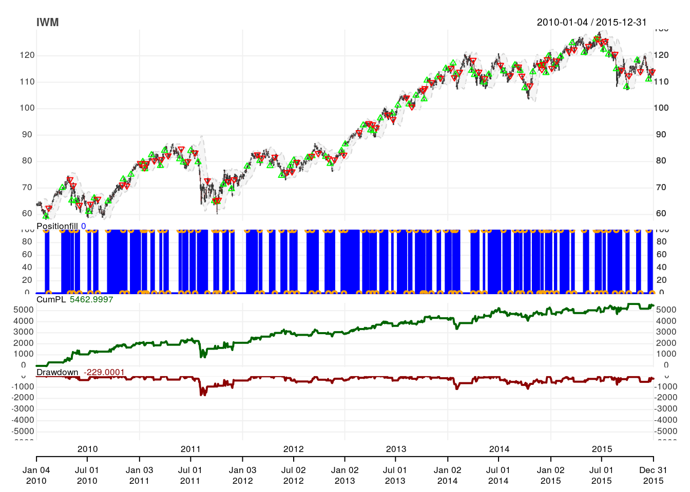
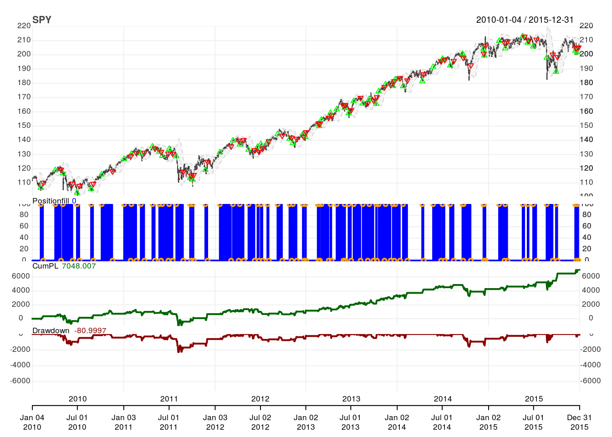
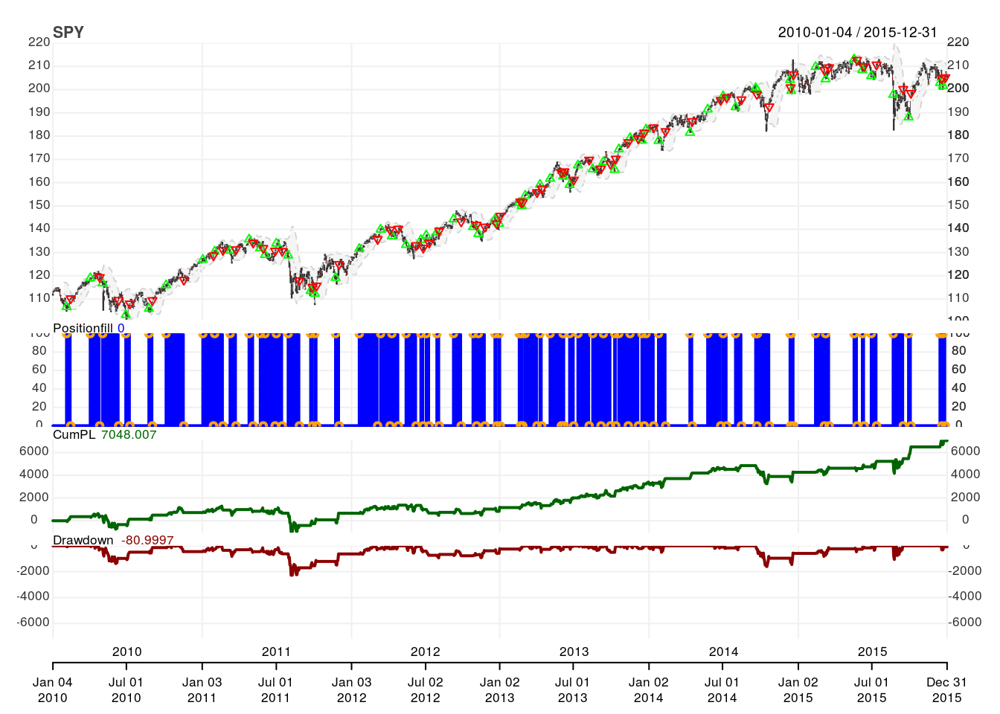
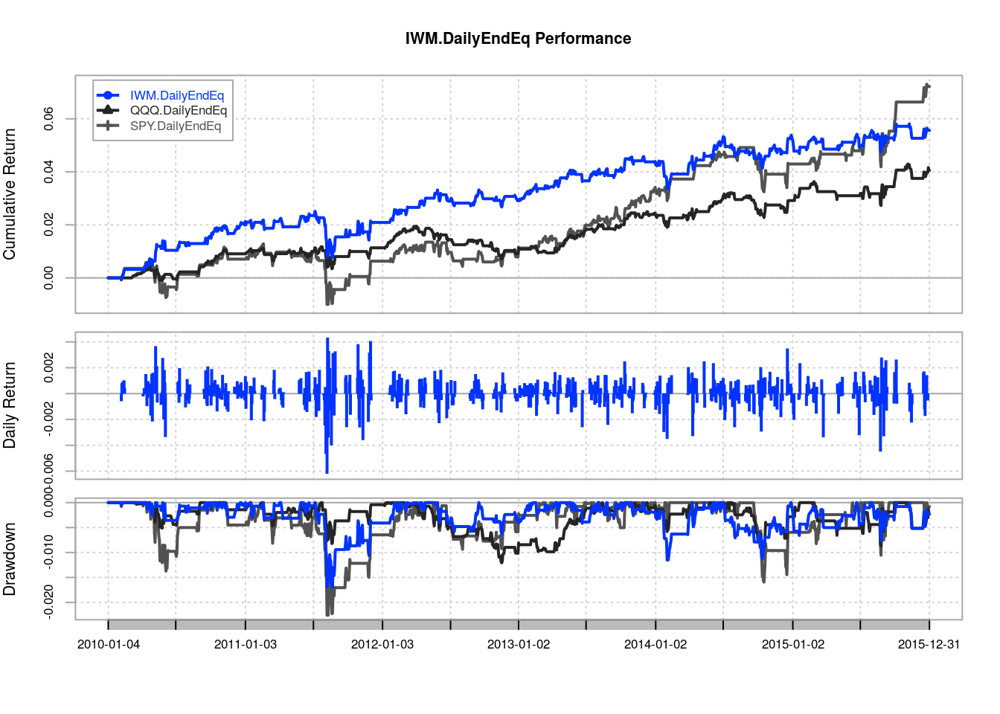
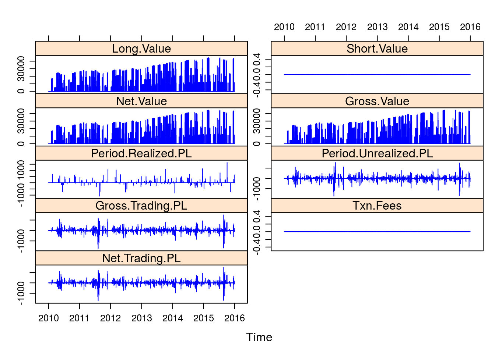
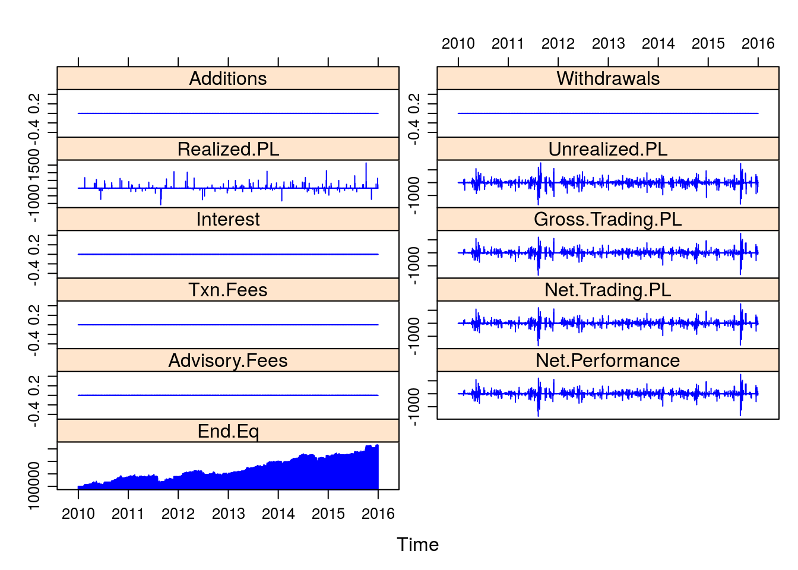
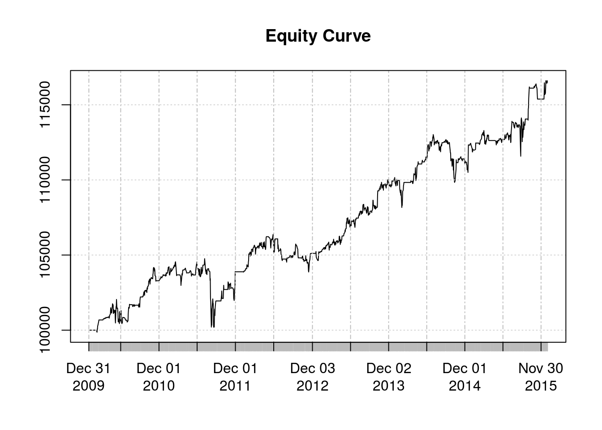

Bollinger Bands
11 February, 2017
library(knitr)
library(lattice)
library(purrr) # For plotting multiple charts at once
library(quantmod)
library(quantstrat)source("./_R/functions.R") # for checkBlotterUpdate()- BTO when Cl < lower BB
- STC when Cl > mid BB
- STO when Cl > upper BB
- BTC when Cl < mid BB
Variables
symbols <- c("IWM", "QQQ", "SPY")
# Transaction Details
shares <- 100 #' Shares to trade
transaction_fees <- 10 #' Cost of trade, abs value
# Indicators
n <- 20 #' bars
ma <- "SMA" #' Moving Average Type
sd <- 2 #' Standard deviation
# Data params
source <- "yahoo" #' Yahoo, Google, FRED, etc.
init_date <- "2009-12-31" #' start_date - 1 day
start_date <- "2010-01-01" #' Begin trading
end_date <- "2015-12-31" #' End trading
init_equity <- 100000 #' Initial equity
# Portfolio, account and strategy names
portfolio.st <- "BollingerBands" #' Name of portfolio
account.st <- "BollingerBands" #' Name of account
strategy.st <- "BollingerBands" #' Name of strategy
# Additional
tz <- "UTC" #' Time zone
#' Currency abbr (ISO 4217); set for currency of symbols.
curr <- "USD"
adjustment <- TRUESetup
Sys.setenv(TZ = tz)currency(curr)## [1] "USD"Get Symbols
getSymbols(Symbols = symbols,
src = source,
from = start_date,
to = end_date,
# Adjust OHLC values for splits and dividencs, etc.
adjust = FALSE)## [1] "IWM" "QQQ" "SPY"stock(symbols,
currency = curr)## [1] "IWM" "QQQ" "SPY"Remove objects
# Remove existing objects to avoid invalid data
rm.strat(portfolio.st)
rm.strat(account.st)Initalize objects
# Initialize portfolio object
initPortf(name = portfolio.st,
symbols = symbols,
initDate = init_date)## [1] "BollingerBands"# Initialize account object
initAcct(name = account.st,
portfolios = portfolio.st,
initDate = init_date,
initEq = 100000)## [1] "BollingerBands"# Set up portfolio
initOrders(portfolio = portfolio.st,
symbols = symbols,
initDate = init_date)strategy(strategy.st,
store = TRUE)Add Indicators
# Add SMA(5) `SMA5`
add.indicator(strategy = strategy.st,
# TTR:SMA()
name = "BBands",
# Parameters for TTR:SMA()
arguments = list(HLC = quote(HLC(mktdata)),
n = n,
maType = ma,
sd = sd),
# Var name for indicator
label = "BB")## [1] "BollingerBands"# Apply indicators
ind <- applyIndicators(strategy = strategy.st,
mktdata = OHLC(SPY))Add Signals
# `Cl.gt.UpperBand` when Close x> up.BB
add.signal(strategy = strategy.st,
name = "sigCrossover",
arguments = list(columns = c("Close",
"up.BB"),
relationship = "gt"),
label = "Cl.gt.up.BB")## [1] "BollingerBands"# `Cl.lt.LoerBand` when Close x< dn.BB
add.signal(strategy = strategy.st,
name = "sigCrossover",
arguments = list(columns = c("Close",
"dn.BB"),
relationship = "lt"),
label = "Cl.lt.dn.BB")## [1] "BollingerBands"# `
add.signal(strategy = strategy.st,
name = "sigCrossover",
arguments = list(columns = c("High",
"Low",
"mavg.BB"),
relationship = "op"),
label = "Cross.Mid")## [1] "BollingerBands"sig <- applySignals(strategy = strategy.st,
mktdata = ind)Add Rules
add.rule(strategy = strategy.st,
name = "ruleSignal",
arguments = list(sigcol = "Cl.gt.up.BB",
sigval = TRUE,
orderqty = shares,
ordertype = "market",
orderside = NULL,
osFUN = osMaxPos),
type = "enter")## [1] "BollingerBands"add.rule(strategy = strategy.st,
name = "ruleSignal",
arguments = list(sigcol = "Cl.lt.dn.BB",
sigval = TRUE,
orderqty = shares,
ordertype = "market",
orderside = NULL,
osFUN = osMaxPos),
type = "enter")## [1] "BollingerBands"add.rule(strategy = strategy.st,
name = "ruleSignal",
arguments = list(sigcol = "Cross.Mid",
sigval = TRUE,
orderqty = "all",
ordertype = "market",
orderside = NULL,
osFUN = osMaxPos),
type = "exit")## [1] "BollingerBands"Add Position Limit
for(symbol in symbols){
addPosLimit(portfolio = portfolio.st,
symbol = symbol,
timestamp = init_date,
maxpos = shares)
}Apply Strategy
# Apply strategy
applyStrategy(strategy.st,
portfolios = portfolio.st)Update Portfolio and Account objects
updatePortf(portfolio.st)## [1] "BollingerBands"updateAcct(account.st)## [1] "BollingerBands"updateEndEq(account.st)## [1] "BollingerBands"Validate Portfolio vs Account
checkBlotterUpdate(portfolio.st,
account.st,
verbose = TRUE)## [1] TRUEChart Positions
# Print charts for each symbol showing transactions, PnL, Drawdown
# Assign to x to suppress R output
x <- map(symbols,
chart.Posn,
Portfolio = portfolio.st,
TA = paste(
sprintf("add_BBands(n = %d, sd = %d, maType = %s, on = -1)",
n,
sd,
ma),
sep = ";")) 

Trade Analysis
tstats <- tradeStats(portfolio.st)
kable(t(tstats))| IWM | QQQ | SPY | |
|---|---|---|---|
| Portfolio | BollingerBands | BollingerBands | BollingerBands |
| Symbol | IWM | QQQ | SPY |
| Num.Txns | 146 | 146 | 124 |
| Num.Trades | 73 | 73 | 62 |
| Net.Trading.PL | 5463.000 | 3997.997 | 7048.007 |
| Avg.Trade.PL | 74.83561 | 54.76708 | 113.67753 |
| Med.Trade.PL | 93.9995 | 51.0002 | 159.4997 |
| Largest.Winner | 627.9999 | 689.0000 | 1035.0006 |
| Largest.Loser | -703.9993 | -301.0002 | -1080.9998 |
| Gross.Profits | 10754.999 | 8538.998 | 12183.006 |
| Gross.Losses | -5292.000 | -4541.001 | -5134.999 |
| Std.Dev.Trade.PL | 262.9743 | 220.9642 | 343.6864 |
| Percent.Positive | 64.38356 | 60.27397 | 67.74194 |
| Percent.Negative | 35.61644 | 39.72603 | 32.25806 |
| Profit.Factor | 2.032313 | 1.880422 | 2.372543 |
| Avg.Win.Trade | 228.8298 | 194.0681 | 290.0716 |
| Med.Win.Trade | 210.9993 | 145.4998 | 275.0008 |
| Avg.Losing.Trade | -203.5384 | -156.5862 | -256.7500 |
| Med.Losing.Trade | -174.5002 | -154.0001 | -162.5000 |
| Avg.Daily.PL | 74.83561 | 54.76708 | 113.67753 |
| Med.Daily.PL | 93.9995 | 51.0002 | 159.4997 |
| Std.Dev.Daily.PL | 262.9743 | 220.9642 | 343.6864 |
| Ann.Sharpe | 4.517470 | 3.934576 | 5.250643 |
| Max.Drawdown | -1711.999 | -1213.002 | -2274.998 |
| Profit.To.Max.Draw | 3.191005 | 3.295953 | 3.098028 |
| Avg.WinLoss.Ratio | 1.124258 | 1.239369 | 1.129782 |
| Med.WinLoss.Ratio | 1.209164 | 0.944803 | 1.692313 |
| Max.Equity | 5692.000 | 4224.997 | 7129.007 |
| Min.Equity | -59.0000 | -113.9999 | -984.9998 |
| End.Equity | 5463.000 | 3997.997 | 7048.007 |
Cash Sharpe Ratio
portfolio.pnl <- .blotter$portfolio.BollingerBands$summary$Net.Trading.PL
SharpeRatio.annualized(R = portfolio.pnl,
geometric = FALSE)## Net.Trading.PL
## Annualized Sharpe Ratio (Rf=0%) 0.820493instrument.returns <- PortfReturns(portfolio.st)
SharpeRatio.annualized(R = instrument.returns,
geometric = FALSE)## IWM.DailyEndEq QQQ.DailyEndEq
## Annualized Sharpe Ratio (Rf=0%) 0.7257267 0.7438546
## SPY.DailyEndEq
## Annualized Sharpe Ratio (Rf=0%) 0.7219646Performance Summary
returns <- PortfReturns(Account = account.st)
rownames(returns) <- NULL
charts.PerformanceSummary(returns,
colorset = bluefocus)
Portfolio Summary
port <- getPortfolio(portfolio.st)
xyplot(x = port$summary,
type = "h",
col = 4)
Account Summary
a <- getAccount(account.st)
xyplot(a$summary, type = "h", col = 4)
Equity Curve
plot(a$summary$End.Eq, main = "Equity Curve")
Session Info
R version 3.3.2 (2016-10-31)
**Platform:** x86_64-pc-linux-gnu (64-bit)
locale: LC_CTYPE=en_US.UTF-8, LC_NUMERIC=C, LC_TIME=en_US.UTF-8, LC_COLLATE=en_US.UTF-8, LC_MONETARY=en_US.UTF-8, LC_MESSAGES=en_US.UTF-8, LC_PAPER=en_US.UTF-8, LC_NAME=C, LC_ADDRESS=C, LC_TELEPHONE=C, LC_MEASUREMENT=en_US.UTF-8 and LC_IDENTIFICATION=C
attached base packages:
- stats
- graphics
- grDevices
- utils
- datasets
- methods
- base
other attached packages:
- tidyquant(v.0.3.0)
- dplyr(v.0.5.0)
- readr(v.1.0.0)
- tidyr(v.0.6.1)
- tibble(v.1.2)
- ggplot2(v.2.2.1)
- tidyverse(v.1.1.1.9000)
- lubridate(v.1.6.0)
- pander(v.0.6.0)
- lattice(v.0.20-34)
- quantstrat(v.0.10.0)
- foreach(v.1.4.3)
- blotter(v.0.9.1741)
- PerformanceAnalytics(v.1.4.3541)
- FinancialInstrument(v.1.2.0)
- quantmod(v.0.4-7)
- TTR(v.0.23-1)
- xts(v.0.9-7)
- zoo(v.1.7-14)
- purrr(v.0.2.2)
- knitr(v.1.15.1)
loaded via a namespace (and not attached):
- Rcpp(v.0.12.9)
- assertthat(v.0.1)
- rprojroot(v.1.2)
- digest(v.0.6.12)
- psych(v.1.6.9)
- R6(v.2.2.0)
- plyr(v.1.8.4)
- backports(v.1.0.5)
- acepack(v.1.4.1)
- evaluate(v.0.10)
- httr(v.1.2.1)
- highr(v.0.6)
- lazyeval(v.0.2.0)
- curl(v.2.3)
- readxl(v.0.1.1)
- data.table(v.1.10.4)
- rpart(v.4.1-10)
- Matrix(v.1.2-7.1)
- checkmate(v.1.8.2)
- rmarkdown(v.1.3)
- splines(v.3.3.2)
- servr(v.0.5)
- stringr(v.1.1.0)
- selectr(v.0.3-0)
- foreign(v.0.8-67)
- htmlwidgets(v.0.8)
- munsell(v.0.4.3)
- broom(v.0.4.1)
- httpuv(v.1.3.3)
- modelr(v.0.1.0)
- base64enc(v.0.1-3)
- mnormt(v.1.5-5)
- htmltools(v.0.3.5)
- nnet(v.7.3-12)
- htmlTable(v.1.9)
- gridExtra(v.2.2.1)
- Hmisc(v.4.0-2)
- codetools(v.0.2-15)
- XML(v.3.98-1.5)
- grid(v.3.3.2)
- nlme(v.3.1-129)
- jsonlite(v.1.2)
- gtable(v.0.2.0)
- DBI(v.0.5-1)
- magrittr(v.1.5)
- scales(v.0.4.1)
- BatchGetSymbols(v.1.1)
- stringi(v.1.1.2)
- reshape2(v.1.4.2)
- latticeExtra(v.0.6-28)
- xml2(v.1.1.1)
- Formula(v.1.2-1)
- RColorBrewer(v.1.1-2)
- iterators(v.1.0.8)
- tools(v.3.3.2)
- forcats(v.0.2.0)
- hms(v.0.3)
- parallel(v.3.3.2)
- survival(v.2.40-1)
- yaml(v.2.1.14)
- colorspace(v.1.3-0)
- cluster(v.2.0.5)
- rvest(v.0.3.2)
- haven(v.1.0.0)